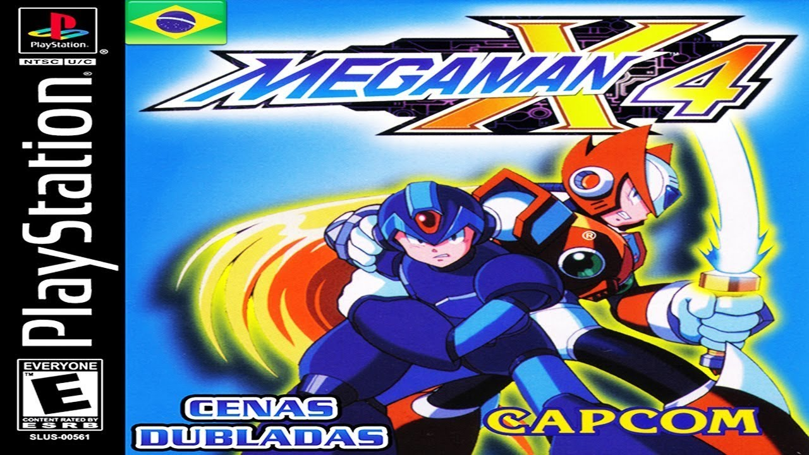

A História do Megaman X4
imagem do jogo Megaman X4
Mega Man X4, lançado originalmente no Japão como Rockman X4 (のX4) é um jogo desenvolvido pela Capcom. É o quarto jogo da série Mega Man X e o segundo jogo da série a ser lançado na Sega Saturn e PlayStation. As duas versões foram lançadas simultaneamente no Japão em 1997. Um lançamento na América do Norte seguiu-se algum tempo depois, enquanto a Europa recebeu apenas a versão para PlayStation em 1997.
No século XXI, a série Mega Man X se passa em uma sociedade povoada por humanos e robôs inteligentes chamados "Reploids". Uma força-tarefa militar chamada "Caçadores de Maverick" é implementada para suprimir a revolta de "Mavericks", reploides que começam a exibir comportamentos perigosos e destrutivos. Mega Man X4 segue dois tais caçadores, Mega Man X e Zero, à medida que eles se envolvem em um conflito entre os Caçadores e um exército reploid chamado "Repliforce". Mega Man X4 é um jogo de plataforma de ação na mesma linha que outros episódios da série. O jogador completa um conjunto de oito estágios em qualquer ordem enquanto luta contra inimigos, ganhando power-ups, e ganhando a arma especial do chefe de cada etapa. Ao contrário dos jogos anteriores da série, Mega Man X4 permite que o jogador escolha entre os dois protagonistas no início do jogo: X, que usa ataques tradicionais de longo alcance; ou Zero, que empunha uma espada de curto alcance.
A recepção crítica para o Mega Man X4 tem sido geralmente positiva. Os críticos elogiaram a capacidade de jogar como X ou Zero, um conceito que muitos encontraram para expandir sobre a então percebida fórmula de jogabilidade esgotada da sub-franquia Mega Man X durante a década de 1990. No entanto, foi criticado por sua falta de inovação. Além de suas versões de console, o jogo foi lançado para Windows em todo o mundo em 1998 e 1999 e em celulares japoneses em 2011 e 2012. Também foi incluído na Mega Man X Collection, uma compilação lançada na América do Norte no PlayStation 2 e Nintendo GameCube em 2006. Mega Man X4 foi disponibilizado na PlayStation Network como parte da linha PSOne Classics para a América do Norte e Japão em 2014. Foi dado um novo lançamento para o PC, bem como portas dadas para playStation 4, Xbox One e Nintendo Switch como parte de Mega Man X Legacy Collection (Rockman X Anniversary Collection no Japão) que foi lançado em 24 de julho de 2018 em todo o mundo e 26 de julho de 2018 no Japão. [4][5]
O enredo difere ligeiramente dependendo se o jogador escolhe Mega Man X ou Zero. Mega Man X4 se passa em um ano ambíguo no século 22 (21XX), onde os humanos coexistem com androides inteligentes chamados "Reploids". Após a terceira derrota de Sigma, um segundo grupo de Caça Maverick surgiu. O exército, chamado de "Repliforce", é um regime militar liderado pelo gigante General Reploid e seu segundo em comando, coronel. Nos bastidores, Sigma tem tentado convencer o General de que os Caçadores são perigosos, e se voltarão contra ele. O General dispensa Sigma, relutante em trair os humanos. Zero, entretanto, é atormentado por um pesadelo recorrente: uma figura misteriosa o acorda, o chama de "obra-prima", e então ordena que ele destrua um alvo desconhecido.
A Lagoa do Céu, uma cidade flutuante maciça, é enviada caindo sobre a cidade abaixo dela, matando inúmeros humanos e reploides. Ou X ou Zero é enviado para investigar possíveis causas do desastre, apenas para se envolver em uma luta para salvar o mundo. [7] No local do acidente, X e Zero encontram o Coronel, e tentam trazê-lo de volta ao QG de Maverick Hunter para investigação. Coronel nega o envolvimento de Repliforce na destruição da Lagoa do Céu, e se recusa a desarmar por orgulho. [8] Zero também resgata Iris, a irmã bondosa do coronel, que foi pega no caos, mas está ilesa, e a manda para o quartel-general. Assim, a Repliforce inicia um movimento para reivindicar a independência do governo humano e criar uma nação apenas para os reploides.